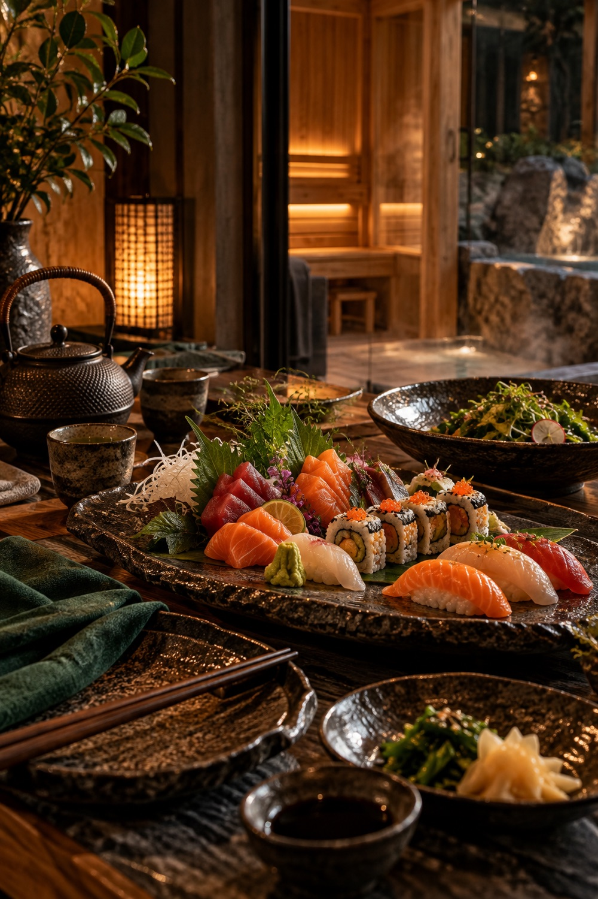
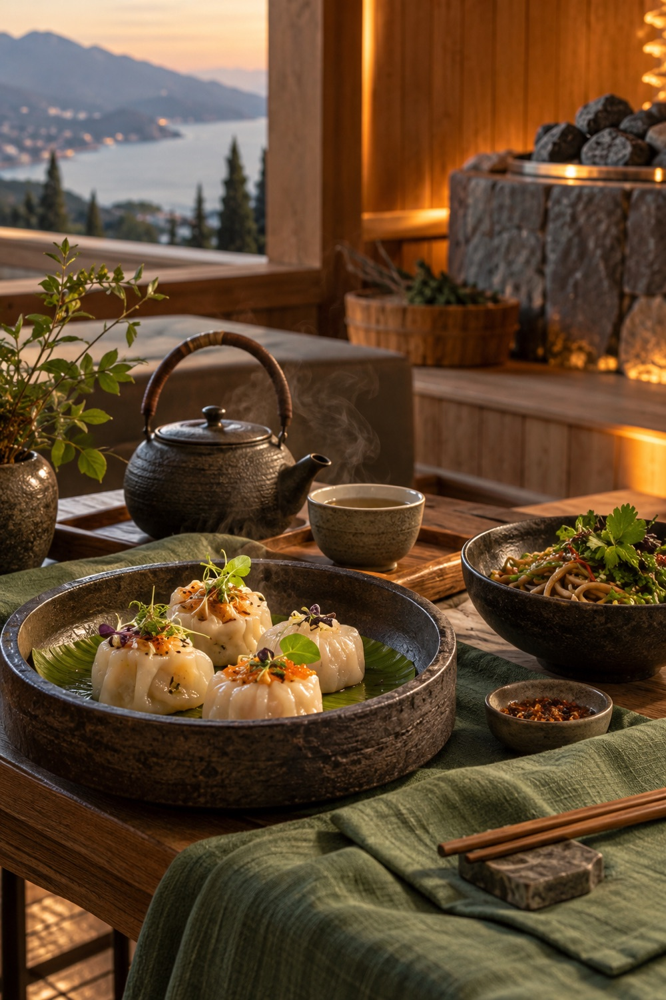
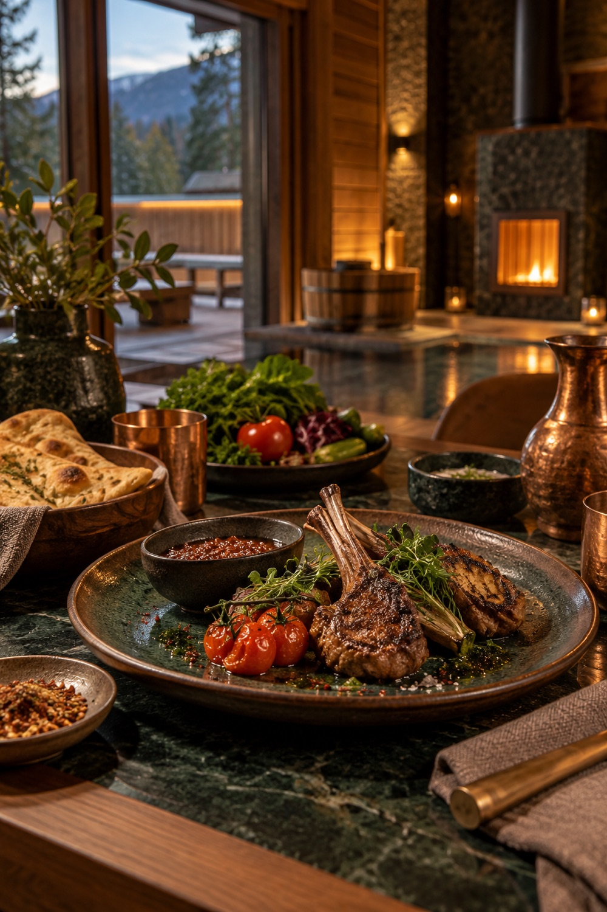

Первый пар
Аромапарение с травами и разговор с пармастером о пожеланиях гостей.
01 / СЕРДЦЕ ПУТЕШЕСТВИЯ
Пармастер ведет банный день лично. Во время первого захода он узнает пожелания гостей и вместе с ними составляет программу парения.
Смотреть программу паренияИСКУССТВО ПАРЕНИЯ
Пармастер начинает со спокойного аромапарения с травами. В парной он знакомится с гостями, узнает, какой жар им нравится и что они хотят попробовать. Во время парения следит за самочувствием и оставляет паузы на отдых.
После разговора подбираем веники, уход и массаж. Уточняем чувствительность к травам, меду и соли. Детали программы и меню подтвердим с выбранной площадкой.
ДЕТАЛИ РИТУАЛА
Веники, травы и уход подбираем после разговора с пармастером.
ХОД ВЕЧЕРА
Аромапарение с травами и разговор с пармастером о пожеланиях гостей.
Парение с подходящими вениками, паузы, выбранный уход и массаж после парной.
Банная мойка по желанию, отдых, чай и ужин в своем темпе.
ПОСЛЕ ПАРНОЙ / СВОЙ СТОЛ
Банный день продолжается за столом. Можно выбрать японскую, азиатскую, кавказскую кухню или собрать свое меню. Пожелания к блюдам, напиткам и подаче обсудим заранее, а состав ужина подтвердим с площадкой и поваром.

Морепродукты, рис, небольшие порции и спокойная подача после парения.

Димсамы, лапша и блюда, которые удобно разделить за общим столом.

Горячее с огня, зелень, лепешки и длинный вечер без спешки.
ПРОГРАММА ПАРЕНИЯ
Аромапарение, личный выбор веников и ухода, массаж и тихий финал. Посмотрите пример дня и отметьте то, что хочется обсудить с пармастером.
Открыть программуАТМОСФЕРА
Фотографии доступной банной площадки и подробности программы покажем до бронирования.
ПОЕЗДКА ПОД ВАШИ ДАТЫ
Расскажите о гостях и датах. После разговора покажем площадку, программу парения и условия.
Описать банный день